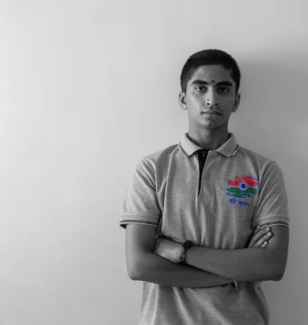
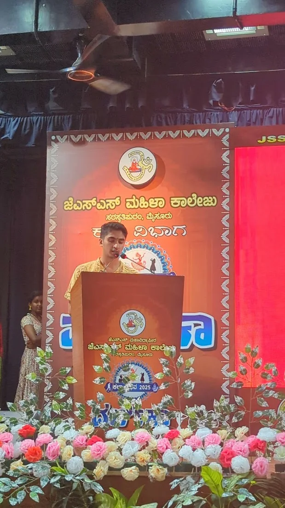
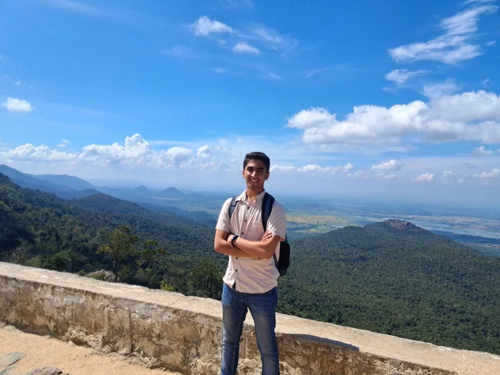

LL.M., Intellectual Property and Technology Law
RV University, Bengaluru.
Profile
I published my first collection of Kannada poems at thirteen. Since then, I have written fiction and essays, translated books into English, and interpreted Kannada poetry at Gamaka performances.
I was born in Bengaluru and educated in Chintamani and Mysuru. After completing my law degree at JSS Law College in Mysuru, I returned to Bengaluru for postgraduate study at RV University.
My legal education


Watch the stage recording ↗
RV University, Bengaluru.
JSS Law College (Autonomous), Mysuru, under Karnataka State Law University, Hubballi. I completed the degree in June 2026.
Sharada Vidya Mandir, Mysuru.
Excel Public School, Mysuru.